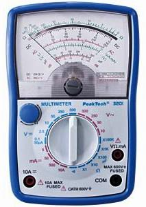
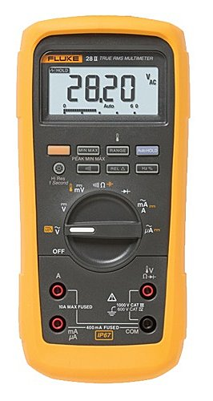
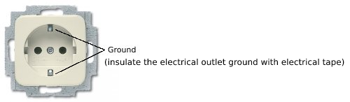

|
One of the most important and most often forgotten "tweaks"
One of the most important and often forgotten "tweaks" for improving the playback of an AV or stereo system is to check and correctly apply the mains polarity.
All of the electrical equipment in your system has been designed with proper A/C polarity in mind. A specific leg of the A/C line
has been dedicated as the positive (sometimes referred to as hot) conductor and the other leg as the negative (sometimes cold) or neutral.
Often a third leg for ground, is included. The problem begins with the A/C wiring in our homes. If our electrical system is improperly wired
we may not have the positive leg and neutral leg in their correct orientation. Coupled with design differences among equipment manufacturers,
we have no way of knowing that correct AC polarity has been achieved by simply inserting the plug in the wall.
Technically, the transformer in the power supply can induce a charge (up to 90 volts) on the chassis side of each component.
Interconnects allow currents to flow between all of the associated components in your system which is likely to modulate the ground
reference of each consecutive gain stage. Proper polarity alignment is achieved by registering the chassis potential to ground.
|
|

|
Correct orientation of the A/C plug (polarity) can be easily determined with a simple Multimeter.
One accurate enough to do the job (preferably a digital unit and one with a 10 to 11 Meg-Ohm input resistance).
|

|
|
To find AC polarity with the Multimeter proceed as follows:
- Turn off all components.
- Isolate each component by removing all wiring including power cord, interconnects, ground leads, antenna wires, etc.
- Connect the common probe of the Multimeter (black lead) to a ground reference point *
- Connect the positive probe (red lead) to the chassis or ground terminal of the unit under test ( Amplifier, Pre-amplifier, Cd-Player, Audio-Streamer.. ).
- Remove ground from the device under test.
Use a two-wire system or temporarily insulate the electrical outlet ground with electrical tape.
- Plug the component into the wall socket and turn on the power switch. Note the A/C voltage reading on the Multimeter.
- Reverse the position of the plug in the wall socket and repeat step 5.
- The correct A/C alignment will be the one that gave the lowest reading.
- Unplug the component, mark the plug so that you can properly reconnect it, and proceed to the next component.
|

The center connection of a three-wire system may not always be a good ground reference, but it is usually usable.
* A good ground reference point may be difficult to identify.
Try using a cold water pipe (do not use a gas pipe!), if you can locate one.
An alternative method would be to use a copper grounding rod driven into the earth.
It is useful if you determine in advance which connection of the socket the voltage is on. Mark the "hot side" with a permanent marker or with a small
tip of nail polish. Do that right next to the hole, but also do it carefully. Also on the plug of the just checked appliance it should be marked which
pin should fill the "hot" side of the socket. This will prevent the obligation to measure everything again in the future.
If all equipment is correctly connected to the mains in this way, the cables can be reconnected and the result can be heard.
The most frequently heard improvements are a calmer soundstage, deeper bass, and a larger soundstage due to the increased detail.
Sometimes the differences are subtle, sometimes they are nothing short of spectacular.
How to Install Ground Rods
|
|